linux下nginx模块开发入门
本文模块编写参考http://blog.codinglabs.org/articles/intro-of-nginx-module-development.html
之前讲了nginx的安装,算是对nginx有了最初步的了解,在配置完之后,我们就可以进行简单的nginx模块开发了.下面本文展示一个简单的Nginx模块开发全过程，我们开发一个叫echo的handler模块，这个模块功能非常简单，它接收“echo”指令，指令可指定一个字符串参数，模块会输出这个字符串作为HTTP响应。例如，对nginx.conf做如下配置：
location /echo { echo "hello"; }
则访问http://localhost/echo时会输出hello nginx。
要实现这个功能需要三步：1、读入配置文件中echo指令及其参数；2、进行HTTP包装（添加HTTP头等工作）；3、将结果返回给客户端。下面本文将分部介绍整个模块的开发过程。
定义模块配置结构
首先我们需要一个结构用于存储从配置文件中读进来的相关指令参数，即模块配置信息结构。根据Nginx模块开发规则，这个结构的命名规则为ngx_http_[module-name]_[main|srv|loc]_conf_t。其中main、srv和loc分别用于表示同一模块在三层block中的配置信息。这里我们的echo模块只需要运行在loc层级下，需要存储一个字符串参数，因此我们可以定义如下的模块配置：
typedef struct { ngx_str_t ed; } ngx_http_echo_loc_conf_t;
其中字段ed用于存储echo指令指定的需要输出的字符串。注意这里ed的类型，在Nginx模块开发中使用ngx_str_t类型表示字符串，这个类型定义在core/ngx_string中：
typedef struct { size_t len; u_char *data; } ngx_str_t;
其中两个字段分别表示字符串的长度和数据起始地址。注意在Nginx源代码中对数据类型进行了别称定义，如ngx_int_t为intptr_t的别称，为了保持一致，在开发Nginx模块时也应该使用这些Nginx源码定义的类型而不要使用C原生类型。除了ngx_str_t外，其它三个常用的nginx type分别为：
typedef intptr_t ngx_int_t; typedef uintptr_t ngx_uint_t; typedef intptr_t ngx_flag_t;
具体定义请参看core/ngx_config.h。关于intptr_t和uintptr_t请参考C99中的stdint.h或http://linux.die.net/man/3/intptr_t。
定义指令
一个Nginx模块往往接收一至多个指令，echo模块接收一个指令“echo”。Nginx模块使用一个ngx_command_t数组表示模块所能接收的所有模块，其中每一个元素表示一个条指令。ngx_command_t是ngx_command_s的一个别称（Nginx习惯于使用“_s”后缀命名结构体，然后typedef一个同名“_t”后缀名称作为此结构体的类型名），ngx_command_s定义在core/ngx_config_file.h中：
struct ngx_command_s { ngx_str_t name; ngx_uint_t type; char *(*set)(ngx_conf_t *cf, ngx_command_t *cmd, void *conf); ngx_uint_t conf; ngx_uint_t offset; void *post; };
其中name是词条指令的名称，type使用掩码标志位方式配置指令参数，相关可用type定义在core/ngx_config_file.h中：
#define NGX_CONF_NOARGS 0x00000001 #define NGX_CONF_TAKE1 0x00000002 #define NGX_CONF_TAKE2 0x00000004 #define NGX_CONF_TAKE3 0x00000008 #define NGX_CONF_TAKE4 0x00000010 #define NGX_CONF_TAKE5 0x00000020 #define NGX_CONF_TAKE6 0x00000040 #define NGX_CONF_TAKE7 0x00000080 #define NGX_CONF_MAX_ARGS 8 #define NGX_CONF_TAKE12 (NGX_CONF_TAKE1|NGX_CONF_TAKE2) #define NGX_CONF_TAKE13 (NGX_CONF_TAKE1|NGX_CONF_TAKE3) #define NGX_CONF_TAKE23 (NGX_CONF_TAKE2|NGX_CONF_TAKE3) #define NGX_CONF_TAKE123 (NGX_CONF_TAKE1|NGX_CONF_TAKE2|NGX_CONF_TAKE3) #define NGX_CONF_TAKE1234 (NGX_CONF_TAKE1|NGX_CONF_TAKE2|NGX_CONF_TAKE3|NGX_CONF_TAKE4) #define NGX_CONF_ARGS_NUMBER 0x000000ff #define NGX_CONF_BLOCK 0x00000100 #define NGX_CONF_FLAG 0x00000200 #define NGX_CONF_ANY 0x00000400 #define NGX_CONF_1MORE 0x00000800 #define NGX_CONF_2MORE 0x00001000 #define NGX_CONF_MULTI 0x00002000
其中NGX_CONF_NOARGS表示此指令不接受参数，NGX_CON F_TAKE1-7表示精确接收1-7个，NGX_CONF_TAKE12表示接受1或2个参数，NGX_CONF_1MORE表示至少一个参数，NGX_CONF_FLAG表示接受“on|off”……
set是一个函数指针，用于指定一个参数转化函数，这个函数一般是将配置文件中相关指令的参数转化成需要的格式并存入配置结构体。Nginx预定义了一些转换函数，可以方便我们调用，这些函数定义在core/ngx_conf_file.h中，一般以“_slot”结尾，例如ngx_conf_set_flag_slot将“on或off”转换为“1或0”，再如ngx_conf_set_str_slot将裸字符串转化为ngx_str_t。
conf用于指定Nginx相应配置文件内存其实地址，一般可以通过内置常量指定，如NGX_HTTP_LOC_CONF_OFFSET，offset指定此条指令的参数的偏移量。
下面是echo模块的指令定义：
static ngx_command_t ngx_http_echo_commands[] = { { ngx_string("echo"), NGX_HTTP_LOC_CONF|NGX_CONF_TAKE1, ngx_http_echo, NGX_HTTP_LOC_CONF_OFFSET, offsetof(ngx_http_echo_loc_conf_t, ed), NULL }, ngx_null_command };
指令数组的命名规则为ngx_http_[module-name]_commands，注意数组最后一个元素要是ngx_null_command结束。
参数转化函数的代码为：
static char *ngx_http_echo(ngx_conf_t *cf, ngx_command_t *cmd, void *conf){ ngx_http_core_loc_conf_t *clcf; clcf = ngx_http_conf_get_module_loc_conf(cf, ngx_http_core_module); clcf->handler = ngx_http_echo_handler; ngx_conf_set_str_slot(cf,cmd,conf); return NGX_CONF_OK; }这个函数除了调用ngx_conf_set_str_slot转化echo指令的参数外，还将修改了核心模块配置（也就是这个location的配置），将其handler替换为我们编写的handler：ngx_http_echo_handler。这样就屏蔽了此location的默认handler，使用ngx_http_echo_handler产生HTTP响应。
创建合并配置信息
下一步是定义模块Context。这里首先需要定义一个ngx_http_module_t类型的结构体变量，命名规则为ngx_http_[module-name]_module_ctx，这个结构主要用于定义各个Hook函数。下面是echo模块的context结构：
static ngx_http_module_t ngx_http_echo_module_ctx = { NULL, /* preconfiguration */ NULL, /* postconfiguration */ NULL, /* create main configuration */ NULL, /* init main configuration */ NULL, /* create server configuration */ NULL, /* merge server configuration */ ngx_http_echo_create_loc_conf, /* create location configration */ ngx_http_echo_merge_loc_conf /* merge location configration */ };
可以看到一共有8个Hook注入点，分别会在不同时刻被Nginx调用，由于我们的模块仅仅用于location域，这里将不需要的注入点设为NULL即可。其中create_loc_conf用于初始化一个配置结构体，如为配置结构体分配内存等工作；merge_loc_conf用于将其父block的配置信息合并到此结构体中，也就是实现配置的继承。这两个函数会被Nginx自动调用。注意这里的命名规则：ngx_http_[module-name]_[create|merge]_[main|srv|loc]_conf。
下面是echo模块这个两个函数的代码：
static void *ngx_http_echo_create_loc_conf(ngx_conf_t *cf){ ngx_http_echo_loc_conf_t *conf; conf = ngx_pcalloc(cf->pool, sizeof(ngx_http_echo_loc_conf_t)); if (conf == NULL) { return NGX_CONF_ERROR; } conf->ed.len = 0; conf->ed.data = NULL; return conf; } static char *ngx_http_echo_merge_loc_conf(ngx_conf_t *cf, void *parent, void *child){ ngx_http_echo_loc_conf_t *prev = parent; ngx_http_echo_loc_conf_t *conf = child; ngx_conf_merge_str_value(conf->ed, prev->ed, ""); return NGX_CONF_OK; }
其中ngx_pcalloc用于在Nginx内存池中分配一块空间，是pcalloc的一个包装。使用ngx_pcalloc分配的内存空间不必手工free，Nginx会自行管理，在适当是否释放。
create_loc_conf新建一个ngx_http_echo_loc_conf_t，分配内存，并初始化其中的数据，然后返回这个结构的指针；merge_loc_conf将父block域的配置信息合并到create_loc_conf新建的配置结构体中。
其中ngx_conf_merge_str_value不是一个函数，而是一个宏，其定义在core/ngx_conf_file.h中：
#define ngx_conf_merge_str_value(conf, prev, default) if (conf.data == NULL) { if (prev.data) { conf.len = prev.len; conf.data = prev.data; }else{ conf.len = sizeof(default) - 1; conf.data = (u_char *) default; } }
同时可以看到，core/ngx_conf_file.h还定义了很多merge value的宏用于merge各种数据。它们的行为比较相似：使用prev填充conf，如果prev的数据为空则使用default填充。
编写Handler
下面的工作是编写handler。handler可以说是模块中真正干活的代码，它主要有以下四项职责：
- 读入模块配置。
- 处理功能业务。
- 产生HTTP header。
- 产生HTTP body。
下面先贴出echo模块的代码，然后通过分析代码的方式介绍如何实现这四步。这一块的代码比较复杂：
static ngx_int_t ngx_http_echo_handler(ngx_http_request_t *r){ ngx_int_t rc; ngx_buf_t *b; ngx_chain_t out; ngx_http_echo_loc_conf_t *elcf; elcf = ngx_http_get_module_loc_conf(r, ngx_http_echo_module); if(!(r->method & (NGX_HTTP_HEAD|NGX_HTTP_GET|NGX_HTTP_POST))){ return NGX_HTTP_NOT_ALLOWED; } r->headers_out.content_type.len = sizeof("text/html") - 1; r->headers_out.content_type.data = (u_char *) "text/html"; r->headers_out.status = NGX_HTTP_OK; r->headers_out.content_length_n = elcf->ed.len; if(r->method == NGX_HTTP_HEAD){ rc = ngx_http_send_header(r); if(rc != NGX_OK){ return rc; } } b = ngx_pcalloc(r->pool, sizeof(ngx_buf_t)); if(b == NULL){ ngx_log_error(NGX_LOG_ERR, r->connection->log, 0, "Failed to allocate response buffer."); return NGX_HTTP_INTERNAL_SERVER_ERROR; } out.buf = b; out.next = NULL; b->pos = elcf->ed.data; b->last = elcf->ed.data + (elcf->ed.len); b->memory = 1; b->last_buf = 1; rc = ngx_http_send_header(r); if(rc != NGX_OK){ return rc; } return ngx_http_output_filter(r, &out); }
handler会接收一个ngx_http_request_t指针类型的参数，这个参数指向一个ngx_http_request_t结构体，此结构体存储了这次HTTP请求的一些信息，这个结构定义在http/ngx_http_request.h中：
struct ngx_http_request_s { uint32_t signature; /* "HTTP" */ ngx_connection_t *connection; void **ctx; void **main_conf; void **srv_conf; void **loc_conf; ngx_http_event_handler_pt read_event_handler; ngx_http_event_handler_pt write_event_handler; #if (NGX_HTTP_CACHE) ngx_http_cache_t *cache; #endif ngx_http_upstream_t *upstream; ngx_array_t *upstream_states; /* of ngx_http_upstream_state_t */ ngx_pool_t *pool; ngx_buf_t *header_in; ngx_http_headers_in_t headers_in; ngx_http_headers_out_t headers_out; ngx_http_request_body_t *request_body; time_t lingering_time; time_t start_sec; ngx_msec_t start_msec; ngx_uint_t method; ngx_uint_t http_version; ngx_str_t request_line; ngx_str_t uri; ngx_str_t args; ngx_str_t exten; ngx_str_t unparsed_uri; ngx_str_t method_name; ngx_str_t http_protocol; ngx_chain_t *out; ngx_http_request_t *main; ngx_http_request_t *parent; ngx_http_postponed_request_t *postponed; ngx_http_post_subrequest_t *post_subrequest; ngx_http_posted_request_t *posted_requests; ngx_http_virtual_names_t *virtual_names; ngx_int_t phase_handler; ngx_http_handler_pt content_handler; ngx_uint_t access_code; ngx_http_variable_value_t *variables; /* ... */ }
由于ngx_http_request_s定义比较长，这里我只截取了一部分。可以看到里面有诸如uri，args和request_body等HTTP常用信息。这里需要特别注意的几个字段是headers_in、headers_out和chain，它们分别表示request header、response header和输出数据缓冲区链表（缓冲区链表是Nginx I/O中的重要内容，后面会单独介绍）。
第一步是获取模块配置信息，这一块只要简单使用ngx_http_get_module_loc_conf就可以了。
第二步是功能逻辑，因为echo模块非常简单，只是简单输出一个字符串，所以这里没有功能逻辑代码。
第三步是设置response header。Header内容可以通过填充headers_out实现，我们这里只设置了Content-type和Content-length等基本内容，ngx_http_headers_out_t定义了所有可以设置的HTTP Response Header信息：
typedef struct { ngx_list_t headers; ngx_uint_t status; ngx_str_t status_line; ngx_table_elt_t *server; ngx_table_elt_t *date; ngx_table_elt_t *content_length; ngx_table_elt_t *content_encoding; ngx_table_elt_t *location; ngx_table_elt_t *refresh; ngx_table_elt_t *last_modified; ngx_table_elt_t *content_range; ngx_table_elt_t *accept_ranges; ngx_table_elt_t *www_authenticate; ngx_table_elt_t *expires; ngx_table_elt_t *etag; ngx_str_t *override_charset; size_t content_type_len; ngx_str_t content_type; ngx_str_t charset; u_char *content_type_lowcase; ngx_uint_t content_type_hash; ngx_array_t cache_control; off_t content_length_n; time_t date_time; time_t last_modified_time; } ngx_http_headers_out_t;
这里并不包含所有HTTP头信息，如果需要可以使用agentzh（春来）开发的Nginx模块HttpHeadersMore在指令中指定更多的Header头信息。
设置好头信息后使用ngx_http_send_header就可以将头信息输出，ngx_http_send_header接受一个ngx_http_request_t类型的参数。
第四步也是最重要的一步是输出Response body。这里首先要了解Nginx的I/O机制，Nginx允许handler一次产生一组输出，可以产生多次，Nginx将输出组织成一个单链表结构，链表中的每个节点是一个chain_t，定义在core/ngx_buf.h：
struct ngx_chain_s { ngx_buf_t *buf; ngx_chain_t *next; };
其中ngx_chain_t是ngx_chain_s的别名，buf为某个数据缓冲区的指针，next指向下一个链表节点，可以看到这是一个非常简单的链表。ngx_buf_t的定义比较长而且很复杂，这里就不贴出来了，请自行参考core/ngx_buf.h。ngx_but_t中比较重要的是pos和last，分别表示要缓冲区数据在内存中的起始地址和结尾地址，这里我们将配置中字符串传进去，last_buf是一个位域，设为1表示此缓冲区是链表中最后一个元素，为0表示后面还有元素。因为我们只有一组数据，所以缓冲区链表中只有一个节点，如果需要输入多组数据可将各组数据放入不同缓冲区后插入到链表。下图展示了Nginx缓冲链表的结构：
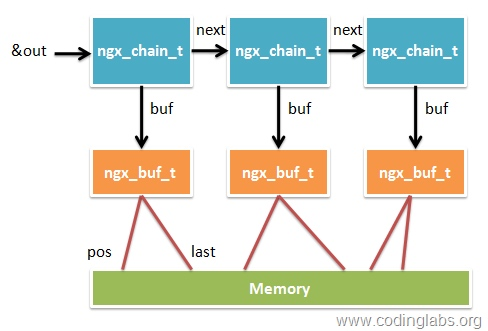
缓冲数据准备好后，用ngx_http_output_filter就可以输出了（会送到filter进行各种过滤处理）。ngx_http_output_filter的第一个参数为ngx_http_request_t结构，第二个为输出链表的起始地址&out。ngx_http_out_put_filter会遍历链表，输出所有数据。
以上就是handler的所有工作，请对照描述理解上面贴出的handler代码。
组合Nginx Module
上面完成了Nginx模块各种组件的开发下面就是将这些组合起来了。一个Nginx模块被定义为一个ngx_module_t结构，这个结构的字段很多，不过开头和结尾若干字段一般可以通过Nginx内置的宏去填充，下面是我们echo模块的模块主体定义：
ngx_module_t ngx_http_echo_module = { NGX_MODULE_V1, &ngx_http_echo_module_ctx, /* module context */ ngx_http_echo_commands, /* module directives */ NGX_HTTP_MODULE, /* module type */ NULL, /* init master */ NULL, /* init module */ NULL, /* init process */ NULL, /* init thread */ NULL, /* exit thread */ NULL, /* exit process */ NULL, /* exit master */ NGX_MODULE_V1_PADDING };
开头和结尾分别用NGX_MODULE_V1和NGX_MODULE_V1_PADDING 填充了若干字段，就不去深究了。这里主要需要填入的信息从上到下以依次为context、指令数组、模块类型以及若干特定事件的回调处理函数（不需要可以置为NULL），其中内容还是比较好理解的，注意我们的echo是一个HTTP模块，所以这里类型是NGX_HTTP_MODULE，其它可用类型还有NGX_EVENT_MODULE（事件处理模块）和NGX_MAIL_MODULE（邮件模块）。
这样，整个echo模块就写好了，下面给出echo模块的完整代码：
ngx_http_echo_module.c
#include "ngx_config.h" #include "ngx_core.h" #include "ngx_http.h" typedef struct { ngx_str_t ed; } ngx_http_echo_loc_conf_t; static char *ngx_http_echo(ngx_conf_t *cf, ngx_command_t *cmd, void *conf); static void *ngx_http_echo_create_loc_conf(ngx_conf_t *cf); static char *ngx_http_echo_merge_loc_conf(ngx_conf_t *cf, void *parent, void *child); /* Directives */ static ngx_command_t ngx_http_echo_commands[] = { { ngx_string("echo"), NGX_HTTP_LOC_CONF|NGX_CONF_TAKE1, ngx_http_echo, NGX_HTTP_LOC_CONF_OFFSET, offsetof(ngx_http_echo_loc_conf_t, ed), NULL }, ngx_null_command }; /* Http context of the module */ static ngx_http_module_t ngx_http_echo_module_ctx = { NULL, /* preconfiguration */ NULL, /* postconfiguration */ NULL, /* create main configuration */ NULL, /* init main configuration */ NULL, /* create server configuration */ NULL, /* merge server configuration */ ngx_http_echo_create_loc_conf, /* create location configration */ ngx_http_echo_merge_loc_conf /* merge location configration */ }; /* Module */ ngx_module_t ngx_http_echo_module = { NGX_MODULE_V1, &ngx_http_echo_module_ctx, /* module context */ ngx_http_echo_commands, /* module directives */ NGX_HTTP_MODULE, /* module type */ NULL, /* init master */ NULL, /* init module */ NULL, /* init process */ NULL, /* init thread */ NULL, /* exit thread */ NULL, /* exit process */ NULL, /* exit master */ NGX_MODULE_V1_PADDING }; /* Handler function */ static ngx_int_t ngx_http_echo_handler(ngx_http_request_t *r){ ngx_int_t rc; ngx_buf_t *b; ngx_chain_t out; ngx_http_echo_loc_conf_t *elcf; elcf = ngx_http_get_module_loc_conf(r, ngx_http_echo_module); if(!(r->method & (NGX_HTTP_HEAD|NGX_HTTP_GET|NGX_HTTP_POST))){ return NGX_HTTP_NOT_ALLOWED; } r->headers_out.content_type.len = sizeof("text/html") - 1; r->headers_out.content_type.data = (u_char *) "text/html"; r->headers_out.status = NGX_HTTP_OK; r->headers_out.content_length_n = elcf->ed.len; if(r->method == NGX_HTTP_HEAD){ rc = ngx_http_send_header(r); if(rc != NGX_OK){ return rc; } } b = ngx_pcalloc(r->pool, sizeof(ngx_buf_t)); if(b == NULL){ ngx_log_error(NGX_LOG_ERR, r->connection->log, 0, "Failed to allocate response buffer."); return NGX_HTTP_INTERNAL_SERVER_ERROR; } out.buf = b; out.next = NULL; b->pos = elcf->ed.data; b->last = elcf->ed.data + (elcf->ed.len); b->memory = 1; b->last_buf = 1; rc = ngx_http_send_header(r); if(rc != NGX_OK){ return rc; } return ngx_http_output_filter(r, &out); } static char *ngx_http_echo(ngx_conf_t *cf, ngx_command_t *cmd, void *conf){ ngx_http_core_loc_conf_t *clcf; clcf = ngx_http_conf_get_module_loc_conf(cf, ngx_http_core_module); clcf->handler = ngx_http_echo_handler; ngx_conf_set_str_slot(cf,cmd,conf); return NGX_CONF_OK; } static void *ngx_http_echo_create_loc_conf(ngx_conf_t *cf){ ngx_http_echo_loc_conf_t *conf; conf = ngx_pcalloc(cf->pool, sizeof(ngx_http_echo_loc_conf_t)); if (conf == NULL) { return NGX_CONF_ERROR; } conf->ed.len = 0; conf->ed.data = NULL; return conf; } static char *ngx_http_echo_merge_loc_conf(ngx_conf_t *cf, void *parent, void *child){ ngx_http_echo_loc_conf_t *prev = parent; ngx_http_echo_loc_conf_t *conf = child; ngx_conf_merge_str_value(conf->ed, prev->ed, ""); return NGX_CONF_OK; }
Nginx模块的安装(如果之前nginx的安装是跟我上一个教程做的话目录可以照搬,否则需要改成你们nginx自己的安装目录和源码目录)
我的nginx源码目录在/usr/local/src/nginx-1.4.2，安装目录在/usr/local/nginx
Nginx不支持动态链接模块，所以安装模块需要将模块代码与Nginx源代码进行重新编译。安装模块的步骤如下：
1、编写模块config文件，这个文件需要放在和模块源代码文件放在同一目录下。文件内容如下：
ngx_addon_name=模块完整名称 HTTP_MODULES="$HTTP_MODULES 模块完整名称" NGX_ADDON_SRCS="$NGX_ADDON_SRCS $ngx_addon_dir/源代码文件名"
2、查看nginx编译安装时的命令，安装了哪些模块
sudo /usr/local/nginx/nginx -V
3、进入Nginx源代码目录，使用下面命令编译生成可执行文件
cd /usr/local/src/nginx-1.4.2 sudo ./configure --prefix=安装目录 --add-module=模块源代码文件目录 --之前安装nginx的配置参数 && sudo make udo cp /usr/local/src/nginx-1.4.2/objs/nginx /usr/local/nginx/nginx
这样就完成了
举个详细的例子，模块源码就是上面的,直接复制即可,我的源代码文件放在~/nginx/ngx_http_echo_module下，我的config文件为：
ngx_addon_name=ngx_http_echo_module HTTP_MODULES="$HTTP_MODULES ngx_http_echo_module" NGX_ADDON_SRCS="$NGX_ADDON_SRCS $ngx_addon_dir/ngx_http_echo_module.c
要添加的模块的目录结构如下:
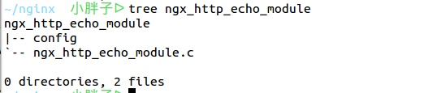
首先查看nginx编译时的配置参数
sudo /usr/local/nginx/nginx -V
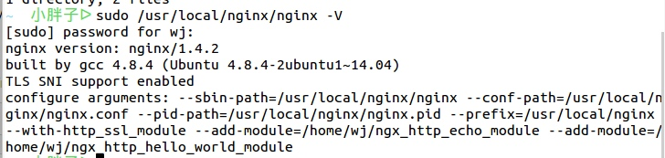
然后进入源码nginx的源码目录编译,只需在原来的编译参数后加模块参数就行了：(注意目录)
cd /usr/local/src/nginx-1.4.2 sudo ./configure --sbin-path=/usr/local/nginx/nginx --conf-path=/usr/local/nginx/nginx.conf --pid-path=/usr/local/nginx/nginx.pid --prefix=/usr/local/nginx --with-http_ssl_module --add-module=/home/wj/nginx/ngx_http_echo_module
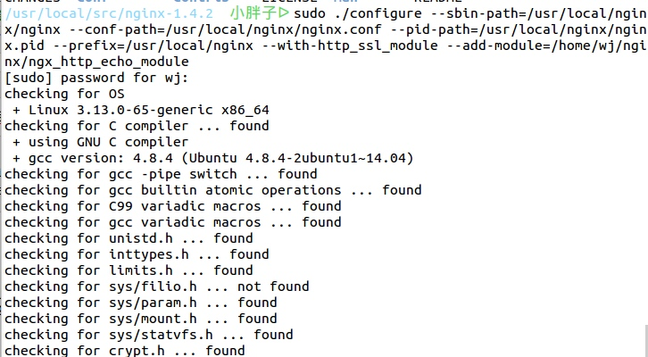
在configure的时候我们可以看到模块被configure文件发现了
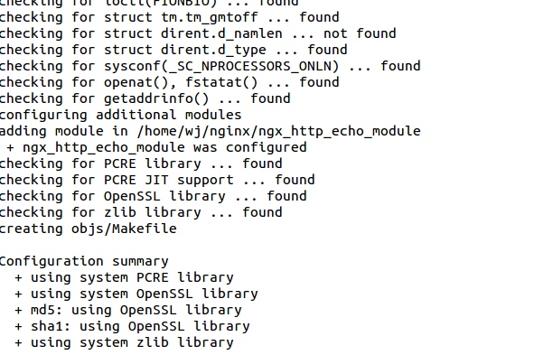
configure完毕,开始make编译(仍在nginx源码目录):
这里要注意Nginx不像apache,模块不是动态添加的（换句话就是说，所有的模块都要预先编译进Nginx 的二进制可执行文件）。
sudo make
make完毕,千万不要sudo make install了,很多参考文档都是install,然并卵,install之后在改配置文件的时候还是会有错,而且一旦configure的时候参数把依赖库也写进去的话你就又把那些已经编译过的依赖又编译了一遍,耗时又浪费系统资源,所以,在安装nginx的时候configure时可以先不指定依赖,参数只写它的安装目录,如果没有报错说明你的系统已经有这些依赖了.我前面在安装nginx前特定下了pcre、zlib、openssl，还编译安装，后来发现这些步骤根本就是白做了，因为系统已经有这些依赖了。希望安装的可以引以为戒。在make之后已经生成了新的nginx可执行文件,在/usr/local/src/nginx-1.4.2/objs下,

此时的nginx是已经重新编译过得了，可以直接拷贝到nginx的安装目录下。
sudo mv /usr/local/nginx/nginx /usr/local/nginx/nginx.old sudo /usr/local/nginx/nginx -s stop(如果你的nginx开着的话，执行这步) sudo cp /usr/local/src/nginx-1.4.2/objs/nginx /usr/local/nginx/nginx
此时，基本上大功告成，你的新模块已经编译进了nginx中。
下面测试一下，修改nginx.conf配置文件，增加以下一项配置：
location /echo { echo "This is my first nginx module!!!"; }
然后开启nginx用curl测试一下：
sudo /usr/local/nginx/nginx curl -i http://localhost/echo
结果如下：
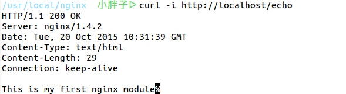
这个nginx模块的开发流程到此结束！下面再看看nginx加载多模块的流程。假如已经有开发好的2个模块：
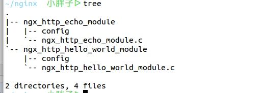
配置configure文件：
sudo ./configure --sbin-path=/usr/local/nginx/nginx --conf-path=/usr/local/nginx/nginx.conf --pid-path=/usr/local/nginx/nginx.pid --prefix=/usr/local/nginx --with-http_ssl_module --add-module=/home/wj/nginx/ngx_http_echo_module --add-module=/home/wj/nginx/ngx_http_hello_world_module
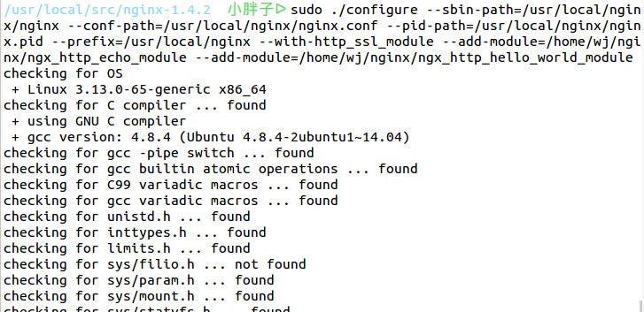
configure文件发现了2个开发模块：
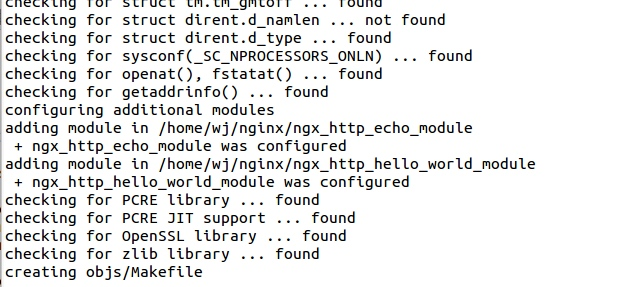
然后开始编译：
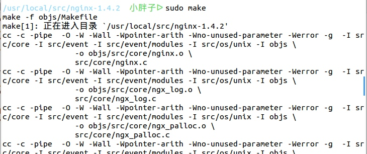
生成了可执行文件：
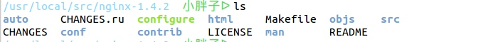
拷贝至nginx安装目录：
sudo /usr/local/nginx/nginx -s stop（拷贝时若提示文本文件忙，可以先停掉nginx） sudo cp ./objs/nginx /usr/local/nginx/nginx
在nginx.conf配置文件中添加location
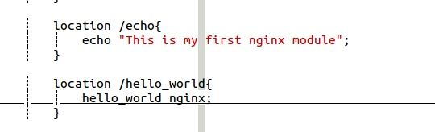
然后开启nginx用curl测试一下：
sudo /usr/local/nginx/nginx curl -i http://localhost/hello_world curl -i http://localhost/echo
结果如下：
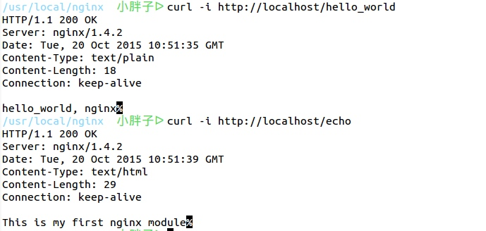
浏览器端：
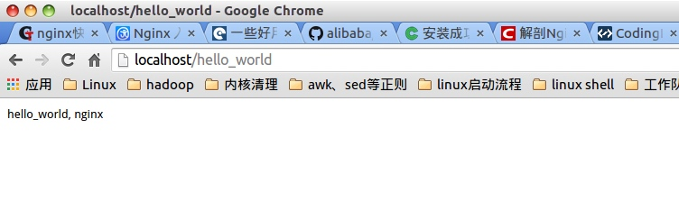
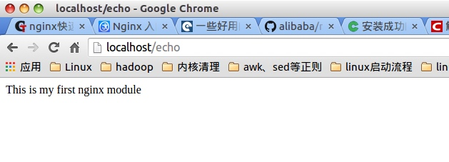
单模块多模块的编译使用都已经讲完了，下面总结一下：
1、在安装nginx的时候，如果你在configure的时候参数没有加pcre、zlib、openssl等依赖也没报错那就不需要编译安装这些依赖 2、如果安装nginx时，configure报错了，说明你的系统缺少这些依赖，你还是老老实实的先编译安装这些库，再在configure的配置参数中加入这些库，并且在以后的模块开发中，每次加入模块时，都要在configure配置参数中加入这些库。 3、在编译完新模块后，你可以选择install ，也可以选择不install，install会把你所有已经编译好的文件都覆盖安装一遍，很费时间资源，而且我在install之后还遇到了莫名其妙问题。所以，可以在make之后，直接把编译好的nginx二进制文件放到nginx安装目录下，直接使用。